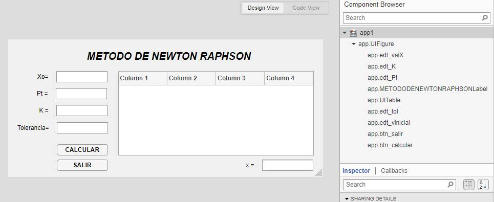
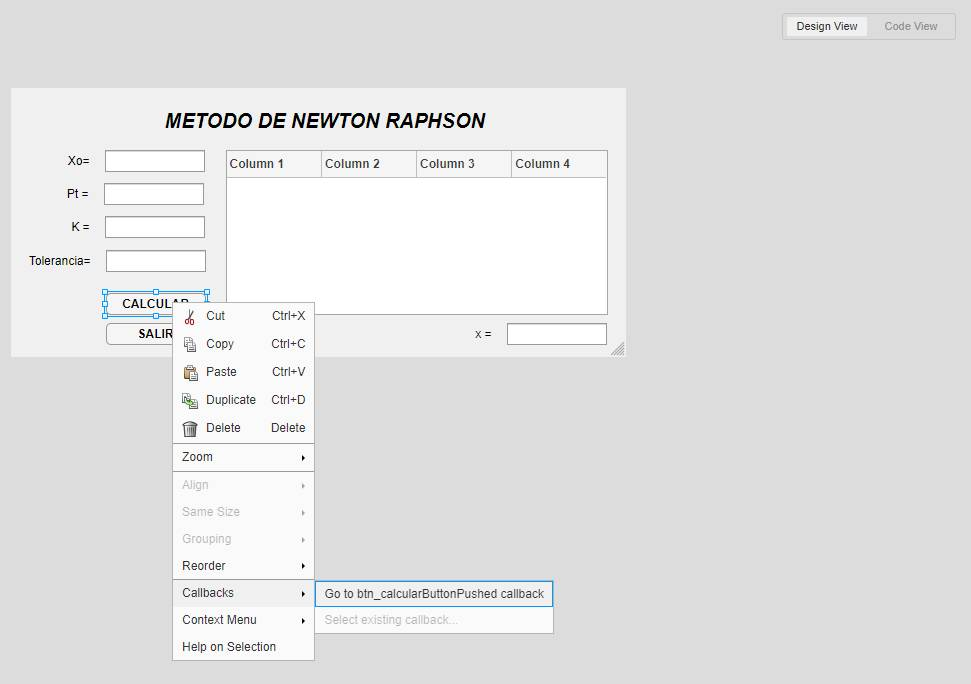
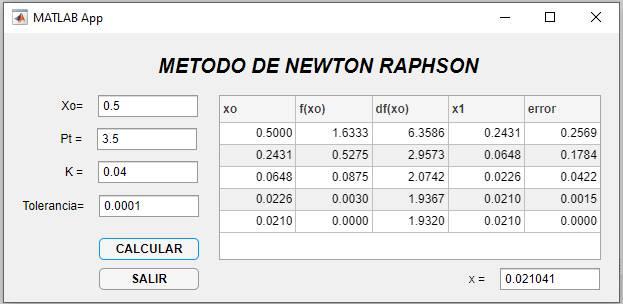

Aplicación de Newton Raphson en un problema de Química
Newton Raphson
En análisis numérico, el método de Newton es un algoritmo para encontrar aproximaciones de los ceros o raíces de una función real. También puede ser usado para encontrar el máximo o mínimo de una función, encontrando los ceros de su primera derivada.
Descripción del Método
El método de Newton es un método abierto, en el sentido de que no está garantizada su convergencia global. La única manera de alcanzar la convergencia es seleccionar un valor inicial lo suficientemente cercano a la raíz buscada. Aunque no sea siempre el mejor método para un problema dado, su simplicidad formal y su rapidez de convergencia hacen que, con frecuencia, sea el primer algoritmo a considerar para esta tarea.
Para ultilizar el método debemos acondicionar la ecuación a resolver a la forma y aplicaremos la formula:
Criterio de paro:
Aplicación del Método
- Definir: , , (valor del orden o menor) , (valor del orden o menor)
- Definir la ecuación a resolver:
- Hallar remplazando en la ecuación (1)
- Hallar remplazando y en la ecuación (2)
- Hallar remplazando , , en la ecuación (3)
- Hallar el , con la ecuación (4)
- Comparar contra
- Si >, entonces aplicar la ecuación (5), y volver al paso (3)
- Si <, entonces terminan las iteraciones, es solución final.
Estudio de caso
En un proceso de ingeniería química el vapor de agua se calienta a temperaturas lo suficientemente altas para que una porción significativa del agua se disocie, o se rompa, para formar oxígeno e hidrógeno :
Si se asume que ésta es la única reacción que se lleva a cabo, la fracción molar x de que se disocia se representa por:
Donde:
K = la constante de equilibrio de la reacción, K=0.04
= la presión total de la mezcla, = 3.5 atm
Determine el valor de x que satisfaga la ecuación.
Solución
Comenzaremos por realizar la suiguiente interfaz gráfica para nuesdtra aplicación, se ha cambiado los nombres de los objetos utilizados en el Component Browser y tambien los textos que muestran en en la interfaz mediante el Component Properties.

Figura 1: Diseño de la interfaz gráfica de nuestra Aplicación
Luego debemos programar todo el método de Newton Raphson en el boton CALCULAR:

Figura 2: añadiendo un evento Add ButtonPushedFcn Callback al boton CALCULAR
Una vez dentro de la vista de código, insertar el siguiente código:
%Obteniendo datos iniciales de los Edit Field
xo=str2num(app.edt_vinicial.Value)
tol=str2num(app.edt_tol.Value)
Pt=str2num(app.edt_Pt.Value)
K=str2num(app.edt_K.Value)
%Definiendo la función a resolverse
f=@(x) x/(1-x)*sqrt(2*Pt/(2+x))-K
%Definiendo el valor de h, error
error=10
h=0.00005
i=1
%Programando el método numérico Newton Raphson
while error>tol
fx=f(xo);
dfx=(f(xo+h)-f(xo-h))/(2*h);
x1=xo-fx/dfx;
error=abs(x1-xo);
xov(i)=xo;
fxv(i)=fx;
dfxv(i)=dfx;
x1v(i)=x1;
errorv(i)=error;
xo=x1;
i=i+1;
end
%Guardando los valores de xo, x1, fx, dfx, error en una matriz
tabla=[xov' fxv' dfxv' x1v' errorv']
%Imprimiendo la matriz en la UITable
app.UITable.ColumnName={'xo','f(xo)','df(xo)','x1','error'}
app.UITable.Data=tabla
%Imprimiendo el valor de x1 encontrado en una Edit Field
app.edt_valX.Value=num2str(x1)El resultado obtenido es el siguiente:

Figura 3: Resultados obtenido del valor de x por el método de Newton Raphson
Referencia
- Nieves & Dominguez (2014). Metodos Numéricos Aplicados a la Ingeniería (4ta Edición). Grupo Editorial Patria. ISBN 978-607-438-926-5.